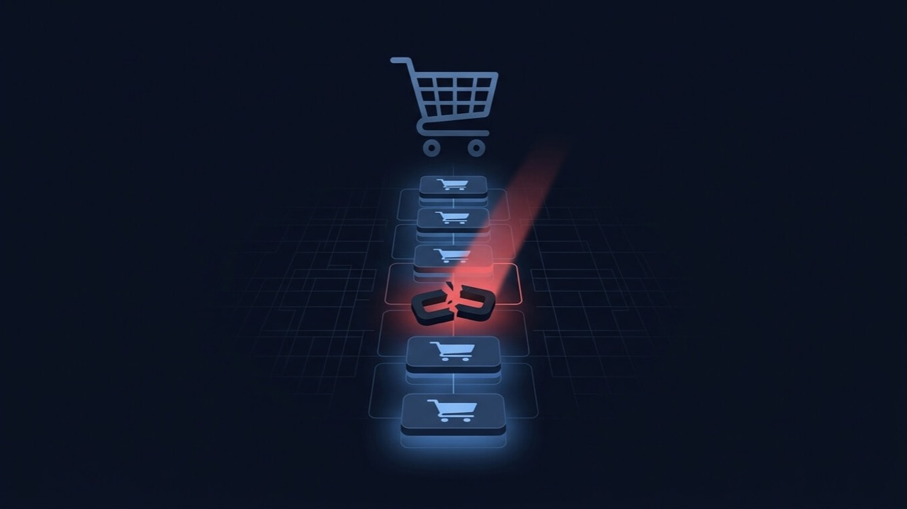

WooCommerce Checkout Not Working? Why Orders Are Failing at the Last Step
Traffic looks normal, products are in stock, and customers are still leaving without buying — because the order never actually goes through. This is the one WordPress problem where every hour it stays broken has a real number attached to it, so here's how to find the actual cause fast.

What is the problem?
A customer adds items to their cart, gets all the way to checkout, fills in their details, clicks Place Order — and nothing happens the way it should. Maybe the button spins and never stops. Maybe it throws a vague error. Maybe the payment is declined even though the card is fine. Whatever the exact shape, the result is the same: a shopper who was ready to buy leaves with an empty cart and no order in your system.
Quick answer: checkout failures are almost never WooCommerce itself breaking. The two most common root causes, by a wide margin, are the checkout or cart page being served from cache when it should never be cached, and a payment gateway configuration issue — wrong keys, sandbox mode left on, or an SSL problem on the checkout URL specifically.
WooCommerce checkout is not a static page. Every time it loads, it's calculating a live cart total, applying tax and shipping rules, checking stock, generating a session, and then handing the payment step off to a gateway plugin that talks to an external payment processor over an API call. That's a long chain, and checkout has to get every link right, every single time, for every single customer — which is exactly why it's more fragile than the rest of the store.
Common symptoms
- Clicking Place Order spins indefinitely, or the page just sits there with no visible response
- A generic message appears — “An error occurred, please try again” — with no useful detail behind it
- A payment gateway declines cards that should work, including your own test cards
- The checkout page itself loads with missing fields, a broken layout, or fields that won't accept input
- One payment method completes fine while another fails every time
- The cart empties unexpectedly the moment checkout is reached, before payment is even attempted
- It works perfectly on a staging copy of the site but fails on the live one, or the other way round
- Some customers report it working fine while others can't get past it at all
Why does this happen?
WooCommerce checkout sits at the intersection of more moving parts than almost any other page on a WordPress site: your theme's checkout template, WooCommerce core, a payment gateway plugin talking to a third-party processor, your caching setup, your SSL certificate, and usually at least one or two extra plugins handling things like custom fields, order bumps, or tax rules. Every one of those has to be configured correctly and stay compatible with the others as each updates independently.
Checkout is also the one part of the store that must never be cached and must always run correctly under a live session, which makes it uniquely vulnerable to a caching plugin's default rules that were written with normal pages in mind. A setting that speeds up your blog posts can quietly break the one page where speed matters least and correctness matters most.
Common technical causes
- Payment gateway API keys that are wrong, expired, or still set to test/sandbox mode on the live site — the single most common cause of a gateway simply refusing every transaction
- SSL not properly configured on the checkout page specifically, not just the homepage — most gateways refuse to process a payment over a connection they can't verify as secure
- The cart or checkout page being served from a page cache that should never touch it, which corrupts session data, cart totals, or nonces between visitors and produces exactly the kind of intermittent failure that's hardest to reproduce on demand
- The newer block-based WooCommerce Checkout conflicting with a plugin or custom field built for the older shortcode checkout — a real and increasingly common cause since WooCommerce shifted its default checkout experience
- A JavaScript error from a theme or plugin breaking the checkout form's own client-side validation, which stops the Place Order button from ever successfully submitting
- A broken tax or shipping zone rule throwing a PHP error mid-calculation for certain carts, regions, or product combinations
- The gateway's own response taking longer than the site's PHP execution time limit allows, which times out a transaction that was actually about to succeed
- A silent currency, country, or shipping-zone restriction excluding a customer without ever showing them a clear reason why
How to diagnose it
- Check WooCommerce → Status → Logs first. This is the single most useful step and the one most people skip. Find the log file matching your payment gateway, and look for an entry timestamped to your failed attempt — it will usually name the exact rejection reason from the gateway's own API response.
- Open the browser console during a real checkout attempt. Add something to the cart and go through checkout yourself with developer tools open (F12 → Console). A JavaScript error here means the form itself is breaking before payment is even attempted.
- Confirm the checkout page isn't cached. Check the page's response headers for caching indicators, or just exclude
/cart/and/checkout/from your caching plugin's rules as a direct test — or run the free WooCommerce Store Health Checker, which checks exactly this along with HTTPS and payment gateway detection. - Test with a built-in gateway like Cash on Delivery or Direct Bank Transfer temporarily enabled. If an order completes fine through one of those, the fault is specific to your card/PayPal gateway, not checkout as a whole.
- Note whether you're on the classic shortcode checkout or the newer block-based checkout (check the Checkout page's content in the editor). This matters directly for the fix, since a plugin conflict is often specific to one or the other.
- Verify SSL specifically on the checkout URL, not the homepage — look for a padlock warning while actually on that page, since a certificate can be valid site-wide but still misconfigured for a subdomain or a specific asset loaded on that page.
How to fix it, step by step
- Exclude the cart and checkout pages from every caching layer — your caching plugin, any CDN, and any server-level page cache your host runs. These pages must generate fresh on every request.
- Re-verify your payment gateway's live API keys, and confirm the gateway is explicitly switched out of test/sandbox mode in its settings. This single setting being left on after launch is a very common, very avoidable cause.
- Fix any SSL or mixed-content warning on the checkout page itself, since a gateway will refuse to run over a connection it can't verify as fully secure.
- If block versus classic checkout is a suspect, switch between them under WooCommerce → Settings → Advanced → Features, and retest. Whichever version clears the conflict tells you which one your problem plugin was actually built to support.
- Deactivate other plugins one at a time, starting with anything that touches the checkout form directly — custom field add-ons, order bumps, upsells, or checkout-page tracking scripts.
- Check WooCommerce → Settings → Tax and Shipping for a broken zone rule if failures correlate with a specific region or cart contents rather than happening universally.
- Raise PHP's max_execution_time slightly if the gateway's own response is simply slow under normal conditions, and confirm with the gateway's support what a typical response time should be.
- Update WooCommerce core and your payment gateway plugin together, to versions that are explicitly listed as compatible with each other — checkout is the most version-sensitive part of the whole store.
- Place a real, complete test order yourself after every change, start to finish, rather than assuming a setting looks correct. This is the only way to confirm the fix actually holds under real conditions.
When this needs professional help
Most causes above are fixable by a comfortable site owner. It's worth bringing in a developer immediately when:
- It's actively costing revenue right now and you need a fast, correct diagnosis rather than trial and error
- You genuinely can't tell whether the fault is on the site or on the payment gateway/merchant account side, and need someone who can check both
- The failure is intermittent rather than constant, which usually means a caching or session-layer problem stacked with something else, and those are hard to isolate without server access
- A custom checkout-field or fee plugin needs actual code changes to work correctly with the block-based checkout
- You've made several changes already and are no longer sure which setting is currently correct
How I can help
A broken checkout is the one WordPress problem I treat as genuinely urgent rather than schedule in around other work, because every hour it stays broken has a real, calculable cost attached to it. I start exactly where the diagnosis above starts — the WooCommerce logs, the gateway configuration, and the caching exclusions, in that order, because that's where this fails most often — rather than guessing or recommending a gateway switch before I know what's actually wrong. WooCommerce stores are a regular part of what I've built and fixed over eleven years of freelance WordPress work, and I test the full order flow end to end before calling it resolved.